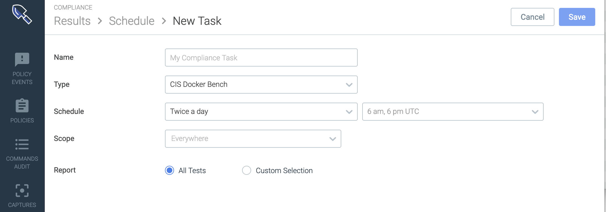
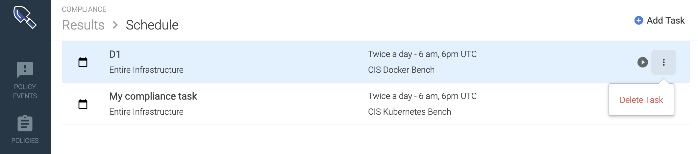
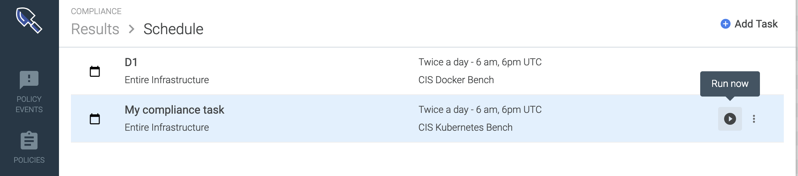
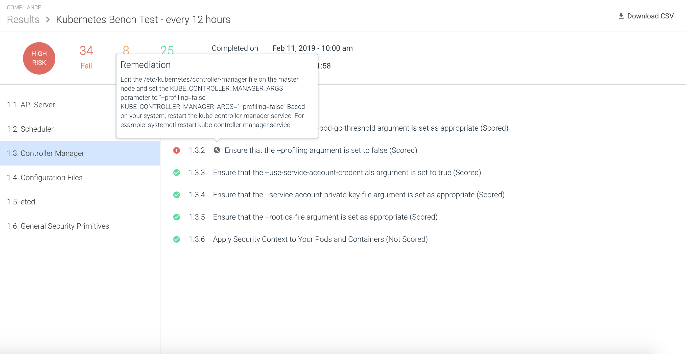
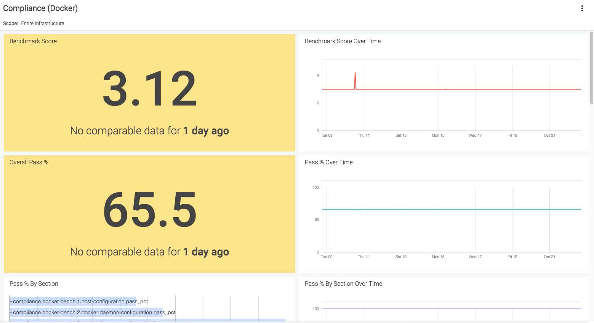

**Copy of Compliance**
The Center for Internet Security (CIS) issues standardized benchmarks, guidelines, and best practices for securing IT systems and environment.
Use the Compliance module of Sysdig Secure to run Kubernetes and Docker CIS benchmarks against your environment.
Contents
How Sysdig Compliance Tests Work
CIS benchmarks are best practices for the secure configuration of a target system. Sysdig has implemented these standardized benchmark controls for different versions of Kubernetes and Docker. You run benchmark tests using the provided tools.
Setting up a task
Using a Compliance Task, configure the type of test, the environment scope, and the scheduled frequency of the compliance check. You can also filter how you'd like to view the Results report. See also Understanding Report Filters.
Running a test
Once a compliance task is configured, Sysdig Secure will:
Shall we describe briefly what goes on behind the scenes?
?
?
Reviewing report results
When a task has been run, it is listed in the Results page and can be viewed as a Report.
Reviewing compliance metrics
Consolidated Compliance metrics can also be viewed in Sysdig Monitor, from default or customized Compliance Dashboards.
 |
Understanding Report Filters
Setting up a Report filter is simple:
Choose
Custom SelectionChoose a
benchmark versionandapply a
Profilefilter, and/orselect/deselect individual controls.
 |
Use the information in this section to understand the effect of your selections.
About Custom Selections
Filtering rules apply to the report, not the test itself.
Filtering Rules
Filtering the Report view does not change the scope of the test run.
The full compliance benchmark will be run, but the result view will be edited.
If you apply a filter to an existing task which has already been run, the filter view will be retroactively applied to the historical reports.
If you deselect the filter, the full results will again be visible.
About Benchmark Versions
CIS issues benchmark versions that correspond to – but are not identical with -- the Kubernetes or Docker software version. See the mapping tables, below.
Version Rules
If you do not customize/filter your report, the Sysdig agent will auto-detect your environment version and will run the corresponding version of the benchmark controls.
If you specify a benchmark version, you can then apply a report filter.
If you specify a benchmark test version that doesn't match your environment version, an error message will be displayed.
The correct test will be run, but the filter must be removed to see the results correctly. (true??)
Kubernetes Version Mapping
CIS Benchmark Version | Kubernetes Version | Sysdig Report Filter UI | |
|---|---|---|---|
Kubernetes 1.0 | Kubernetes v 1.6 |
| |
Kubernetes 1.1 | Kubernetes v 1.7 | ||
Kubernetes 1.2 | Kubernetes v 1.8 | ||
Kubernetes 1.3 | Kubernetes v 1.11 |

Docker Version Mapping
?
About Profile Levels
<Question about this in Slack: https://sysdigcloud.slack.com/archives/CA6GQQT9A/p1556679025038600>
From the CIS FAQ:
Level 1 Profile: Limited to major issues
Considered a base recommendation that can be implemented fairly promptly and is designed to not have an extensive performance impact. The intent of the Level 1 profile benchmark is to lower the attack surface of your organization while keeping machines usable and not hindering business functionality.
Level 2 Profile: Extensive checks, more complete
Considered to be "defense in depth" and is intended for environments where security is paramount. The recommendations associated with the Level 2 profile can have an adverse effect on your organization if not implemented appropriately or without due care.
Get Started
Refer to the pages in this section to begin scheduling compliance tests and reviewing the reported results.
**Configure Compliance Tasks**
Use a Compliance Task to define:
the type of benchmark test to be run
the scope of the environment to be checked
the scheduled test frequency
the format in which you want to view the results report.
Once a task has been set up, it will run tests automatically on the scheduled timeline. You can also trigger the task manually (see Trigger a Manual Benchmark Test (Run Now)).
Contents
Trigger a Manual Benchmark Test (Run Now)
Schedule an Automated Benchmark Test
Create a Task
From the
Compliancemodule, select theScheduleicon.
The
Schedule list(of existing tasks) is displayed.
Click +
Add Taskand define the task parameters on theNew Taskpage: Name:Create a meaningful name.Type:SelectCIS Docker BenchorCIS Kubernetes Bench.Schedule:Choose a frequency and time to run the test.Scope:ChooseEverywhere, or narrow the scope as needed. (See also Grouping, Scoping, and Segmenting Metrics.)Report: Select how you want to view the test results in the report.
All Tests:means that no filter will be applied to the Report.Sysdig will automatically apply the correct version of the benchmark test for your environment, based on the version of Kubernetes or Docker where the agent is installed.
Custom Selection:means that you will Filter Report Results
Click
Save.
Filter Report Results
Note that the full compliance test will be run, even when the Report view is filtered. See Understanding Report Filters for more information.
From the
Compliancemodule, select theScheduleicon and either select or create aTask.The
Taskconfiguration page is displayed.For Report, choose
Custom Selection.Choose the appropriate
CISbenchmark versionfrom the drop-down menu (based on theTypechosen).See About Benchmark Versions for details.
Filter results as desired.
Optional: Choose a
Profile Level(1 or 2).See About Profile Levels for details.
Optional: Select/deselect individual controls as desired.
Optional: Select
Allto clear previous selections and begin again.
Click
Save.
Edit a Scheduled Task
From the
Compliancemodule, select theScheduleicon.The list of scheduled tasks is displayed.
Select a task from the list and edit.
Note
Changing the Report filter settings for a task that has already been run will retroactively filter the existing report views.
Click
Save.
Delete a Scheduled Task
From the
Compliancemodule, select theScheduleicon.On the relevant task, click the
More Options(three dots) icon. Select
Delete taskand clickYesto confirm (orNoto revert the change).
Trigger a Manual Benchmark Test (Run Now)
Rather than wait for the next scheduled time for a compliance benchmark test to run, users can choose to run a benchmark test manually.
From the
Compliancemodule, select theScheduleicon.On the relevant task, click the
Run Now(arrow) icon. A notification will state that the test was successfully run.
Return to the
Resultstab and refresh the page after several minutes to see the results..
**Review Compliance Results**
<intro>
Contents
Review Task Results
Results from completed tasks can be reviewed from the Results page, by clicking on an individual task from the list. Opening a task displays the Test Results page for either Kubernetes or Docker (as appropriate), and provides a detailed report as to how the node performed against the benchmark tests.
The sections below provide screenshots of example benchmark results, and a link to the specific CIS benchmark results document download page. For more information about CIS practices, refer to https://www.cisecurity.org/.
Note
As shown in the Docker section below, some results have code blocks beneath them. These provide detailed information that users can copy and paste into support tickets should an issue arise, to assist the support team in finding the issue quickly.
Note
When a compliance test fails, an error log is displayed in place of the task results.
Search Test Results
The Results page can be searched/filtered using the search bar functionality at the top of the page:
 |
Identify the Kubernetes Master Node
The Kubernetes master node can be identified by the Kubernetes Master label applied to the results entry on the Results tab:
 |
Kubernetes Benchmark Test Results
 |
Note
For the complete CIS Kubernetes Benchmark documentation, refer to https://www.cisecurity.org/benchmark/kubernetes/.
Supported Kubernetes Versions
Sysdig supports Kubernetes compliance benchmark tests for the following Kubernetes distributions:
Kubernetes versions 1.6, 1.7, 1.8, 1.11
Note
Sysdig supports Kubernetes compliance benchmark tests for multiple versions of Kubernetes, as defined in the following CIS Benchmarks:
CIS Benchmark 1.0.0 (Kubernetes version 1.6)
CIS Benchmark 1.1.0 (Kubernetes version 1.7)
CIS Benchmark 1.2.0 (Kubernetes version 1.8)
CIS Benchmark 1.3.0 (Kubernetes version 1.11)
For versions between these supported milestones, the tests will fall back to earlier milestone versions.
Amazon Elastic Container Service for Kubernetes (Amazon EKS) default cluster version
Google Kubernetes Engine (GKE) default cluster version
IBM Kubernetes Service
Openshift versions 3.10, 3.11
Rancher
Docker Benchmark Test Results
 |
Note
For the complete CIS Docker Benchmark documentation, refer to https://www.cisecurity.org/benchmark/docker/.
Download Task Results
CIS compliance task results can be downloaded as a .CSV file:
From the Compliance module, navigate to the
Resultspage.Select the relevant task.
Click the Download CSV button:

Remediation Information
Sysdig provides remediation steps for each non-passing test in the benchmark, allowing users to identify the changes required to the environment to resolve the issues found.
To view the remediation information:
From the
Compliancemodule, click the relevant compliance benchmark test to open the results.Identify the desired test result by navigating to the results tab and scrolling to the test line.
Move the mouse cursor over the wrench icon beside the test result to open the remediation information text pop up.

The pop up information is a generic summary of what is usually required to resolve the issue. This information is not environment specific, and should be used as a guide, rather than specific configuration instructions.
Note
The remediation information is included when the report is downloaded as a .CSV file, allowing users to see all of the required configuration changes to remedy the found issues.
**Use Compliance Dashboards and Metrics**
<intro>
Contents
Compliance Dashboards
Sysdig provides two pre-built compliance dashboards as part of Sysdig Monitor. These dashboards are called Compliance (K8s) and Compliance (Docker), and can be found by searching the list of pre-built dashboards for the word "Compliance", or by scrolling to the Compliance section of the list.
For information on building dashboards from scratch, or using the pre-built dashboards, refer to the Configure Dashboards documentation.
The example dashboard below is a Docker compliance dashboard:
|  |
The example dashboard below is a Kubernetes compliance dashboard:
 |
Compliance Metrics
A number of compliance metrics for both Kubernetes and Docker are available to view in Sysdig Monitor dashboards. These metrics are documented in full in the Metrics Dictionary, and are available here: Compliance.